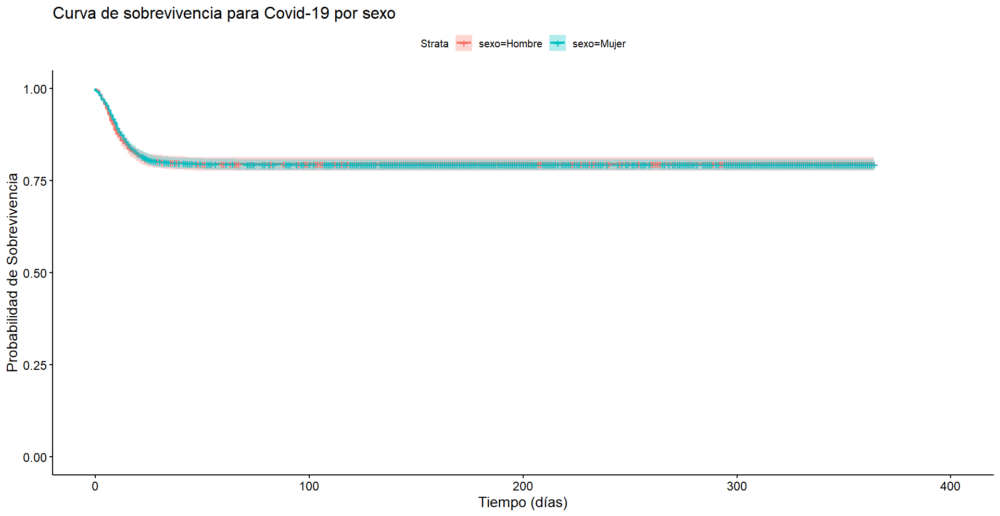
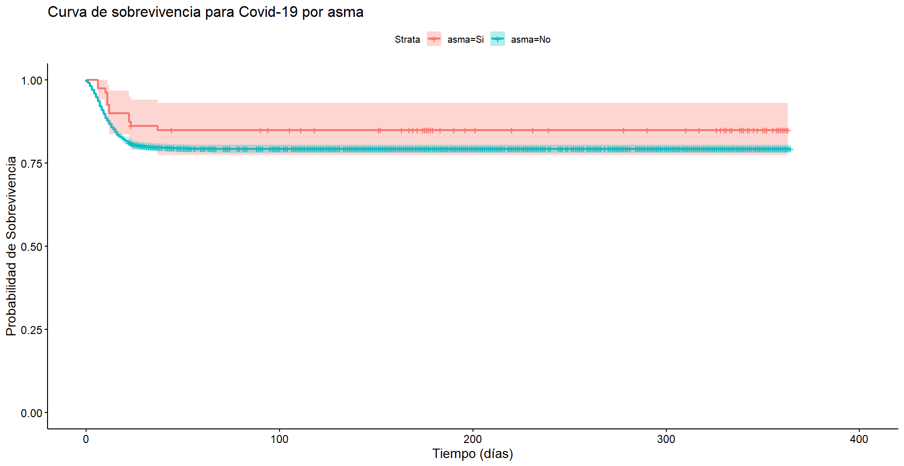
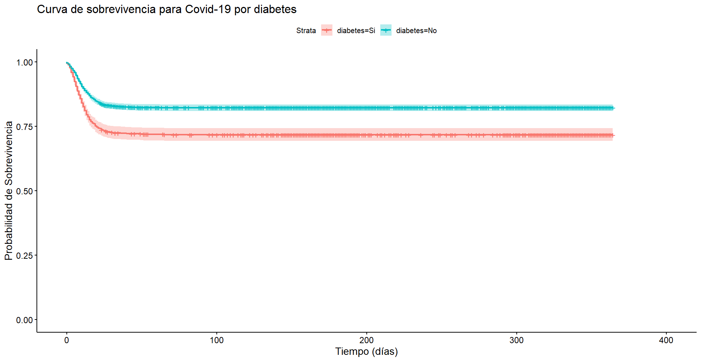
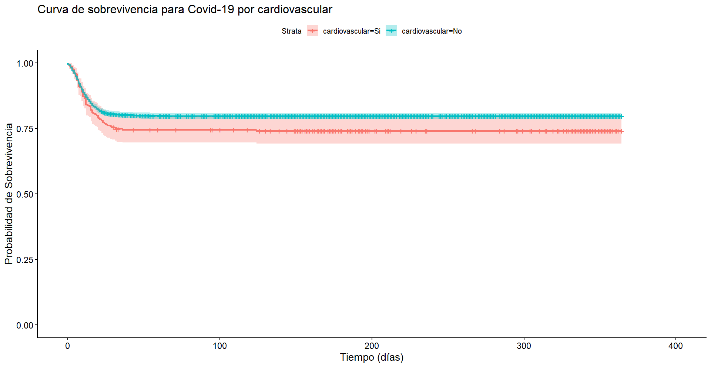
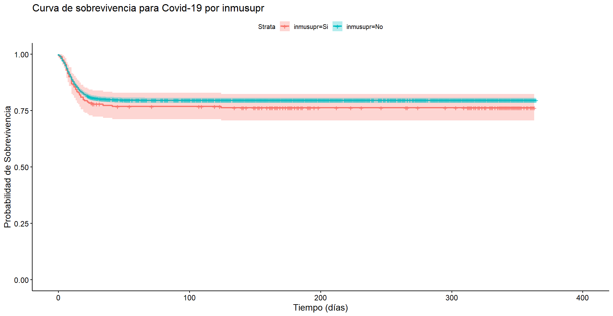
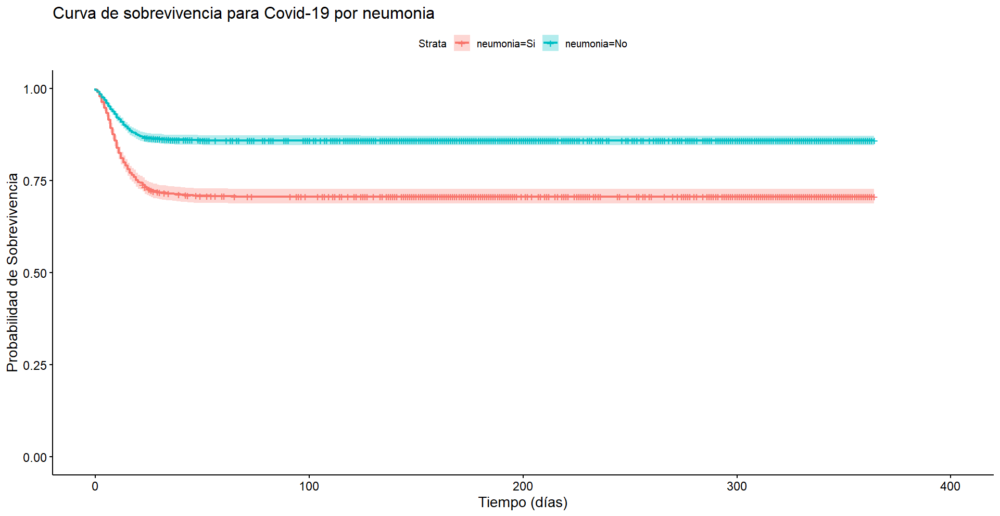
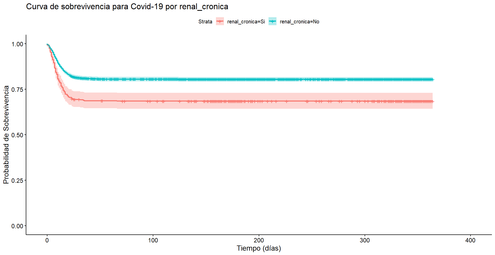
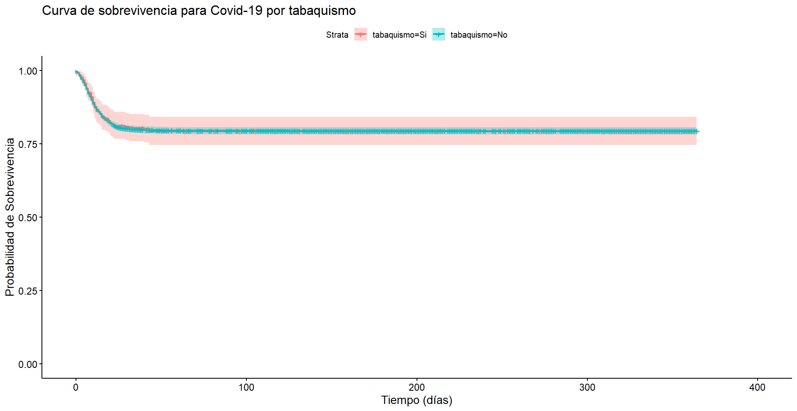
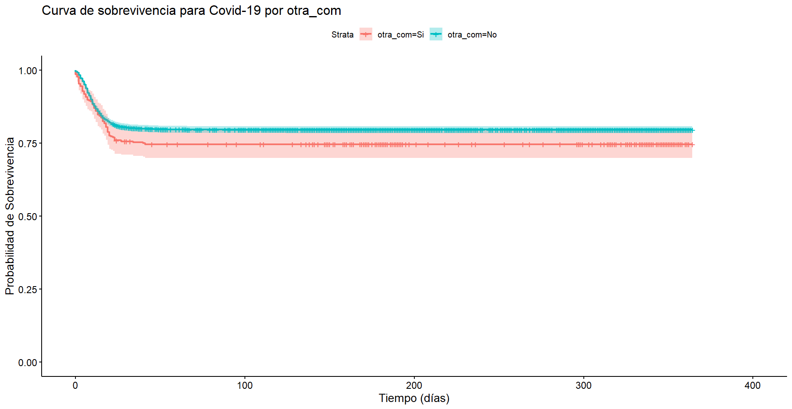

| Modelo de Cox | ||||||
|---|---|---|---|---|---|---|
| Est. | 2.5 % | 97.5 % | S.E. | t | p | |
| + p < 0.1, * p < 0.05, ** p < 0.01, *** p < 0.001 | ||||||
| sexo1 | 0.920 | 0.805 | 1.051 | 0.063 | -1.224 | 0.2210 |
| intubado1 | 1.225* | 1.010 | 1.487 | 0.121 | 2.057 | 0.0397 |
| neumonia1 | 0.532*** | 0.463 | 0.611 | 0.038 | -8.927 | <1e-04 |
| edad | 1.036*** | 1.032 | 1.040 | 0.002 | 18.142 | <1e-04 |
| diabetes1 | 0.951 | 0.819 | 1.104 | 0.072 | -0.662 | 0.5081 |
| epoc1 | 1.018 | 0.783 | 1.324 | 0.136 | 0.132 | 0.8953 |
| asma1 | 1.135 | 0.640 | 2.014 | 0.332 | 0.433 | 0.6650 |
| inmusupr1 | 0.806 | 0.593 | 1.097 | 0.127 | -1.370 | 0.1706 |
| hipertension1 | 0.894 | 0.770 | 1.037 | 0.068 | -1.478 | 0.1395 |
| otra_com1 | 0.817 | 0.638 | 1.046 | 0.103 | -1.605 | 0.1084 |
| cardiovascular1 | 1.366* | 1.059 | 1.763 | 0.178 | 2.399 | 0.0164 |
| obesidad1 | 0.921 | 0.743 | 1.141 | 0.101 | -0.757 | 0.4489 |
| renal_cronica1 | 0.640*** | 0.525 | 0.780 | 0.065 | -4.417 | <1e-04 |
| tabaquismo1 | 1.339* | 1.007 | 1.779 | 0.194 | 2.010 | 0.0445 |
| otro_caso1 | 1.403*** | 1.170 | 1.681 | 0.130 | 3.663 | 0.0002 |
| Num.Obs. | 4449 | |||||
| AIC | 14621.7 | |||||
| BIC | 14717.7 | |||||
| RMSE | 0.46 | |||||
Sobrevivencia
Modelos de Sobrevivencia Bayesianos para Covid-19
8 de mayo de 2025
Estimadores de Kaplan-Meier










Modelo de Cox

Prior de \(\lambda\)

Resultados del Modelo Semiparamétrico

Notas
Sitio web: https://www.gob.mx/salud/documentos/datos-abiertos-152127
Confirmados por prueba PCR o por comite experto